This article explores the process of designing and creating an animatronic mask for my cosplay project, focusing on one of its biggest challenges: achieving both visibility and accuracy to the original in-game design. In real animatronics, performers usually see through the character's mouth. This allows the mechanisms required to operate the eyes to be placed inside the head. However, this solution can affect the immersion of a cosplay and, in some cases, make the final result less faithful to the original character design. I wanted to find a different solution. My two main goals were to make it possible to see through the mask's eyes while keeping them as close as possible to their appearance in the original games. To achieve this, I developed three different prototypes, gradually improving the design until I found a solution that met both requirements.
01 / THE PROBLEM
THE CHALLENGE
In traditional animatronics, performers usually see through the character's mouth. This allows the mechanisms needed to operate the eyes to be placed inside the head. However, this creates a problem for cosplay. Having the performer's face visible through the mouth can break the immersion and make the costume less faithful to the original character design.
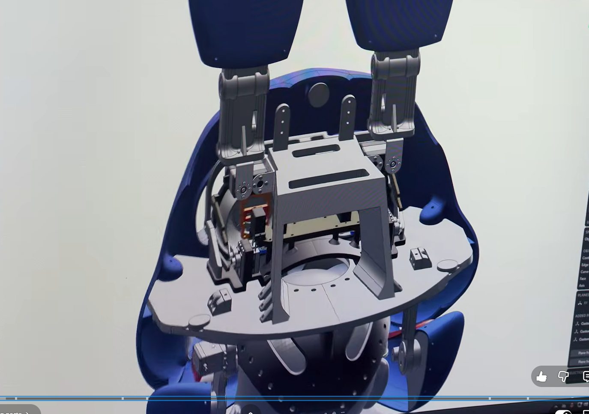
I used SlenderDummy's work as a reference to understand how these mechanisms are usually designed and how they fit inside an animatronic head.
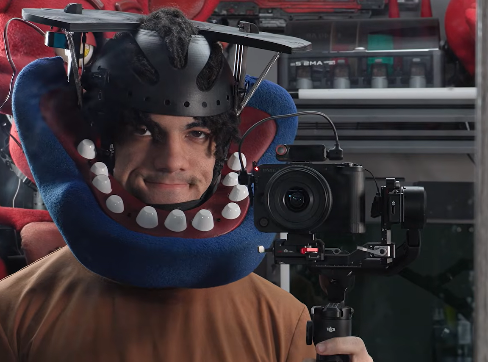
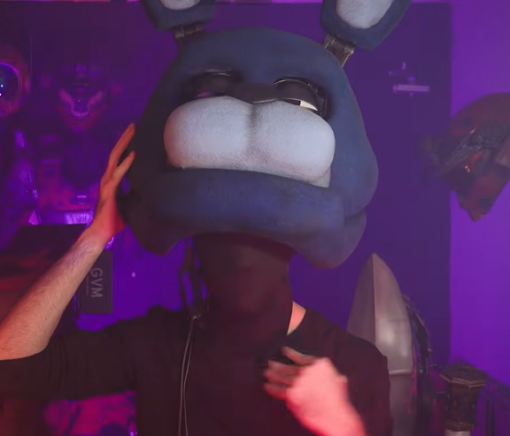
These examples helped me understand the limitations of the traditional approach and motivated me to find another solution.
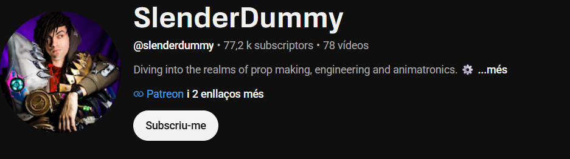
Reference and inspiration: SlenderDummy.
02 / FIRST PROTOTYPE
THE FIRST ATTEMPT
The first prototype was my initial attempt at solving the visibility problem. It allowed me to see through the eyes of the mask, so the main goal was already achieved. However, the overall design still looked quite different from the original in-game endoskeleton. The eyes, in particular, needed further work to better match the original model.
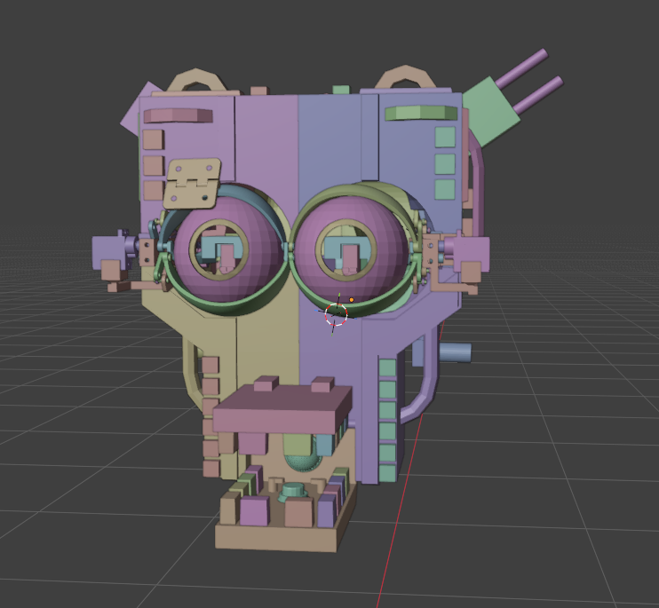
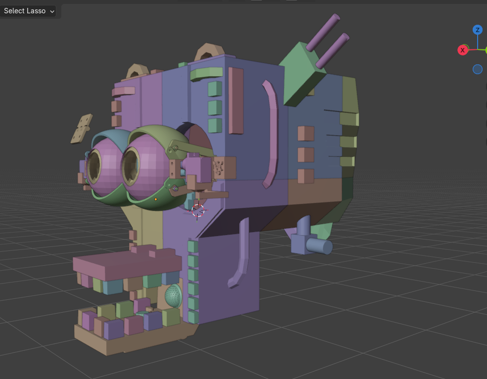
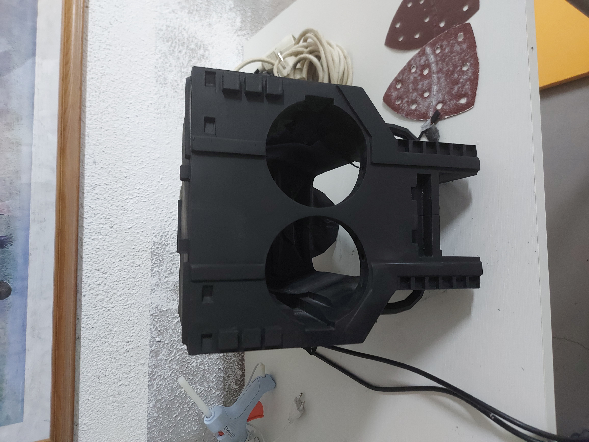
Comparing it with the original endoskeleton made it clear that I needed to rethink some parts of the design, especially the eye shape and appearance.
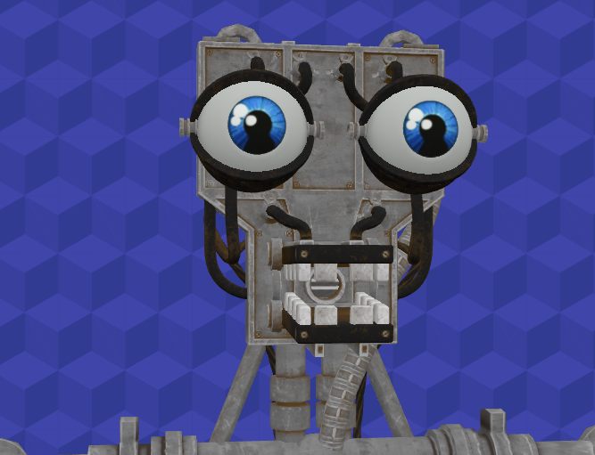
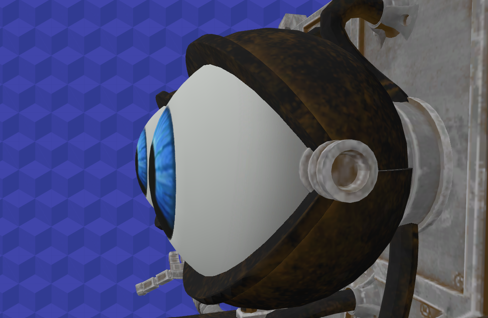
03 / SECOND PROTOTYPE
GETTING CLOSER
The second prototype was a major improvement over the first one. Its overall design was much closer to the original endoskeleton from the games, making it look more accurate and recognizable. However, there was still one important detail that I wasn't completely satisfied with: the eyes. Although the design had improved, they still didn't look quite like the original in-game eyes. I decided to keep refining the design and focus on solving this last issue in the next prototype.
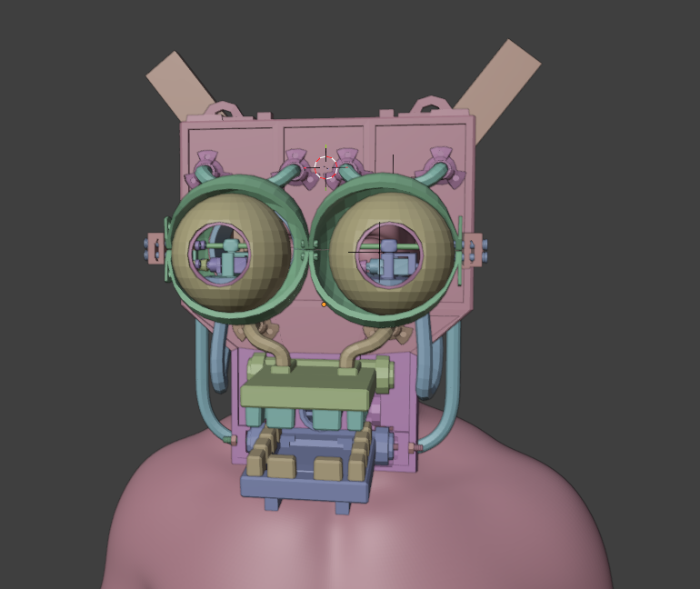
Compared to the original design, the second prototype was getting much closer, but the eyes still needed further adjustments.
04 / FINAL PROTOTYPE
THE FINAL DESIGN
After refining the previous designs, I finally achieved what I was looking for with the third prototype. This version successfully combines both of my main goals: being able to see through the mask's eyes while keeping their appearance as close as possible to the original endoskeleton from the games. The result is a much more faithful design without sacrificing visibility, solving the main challenge that started this project.
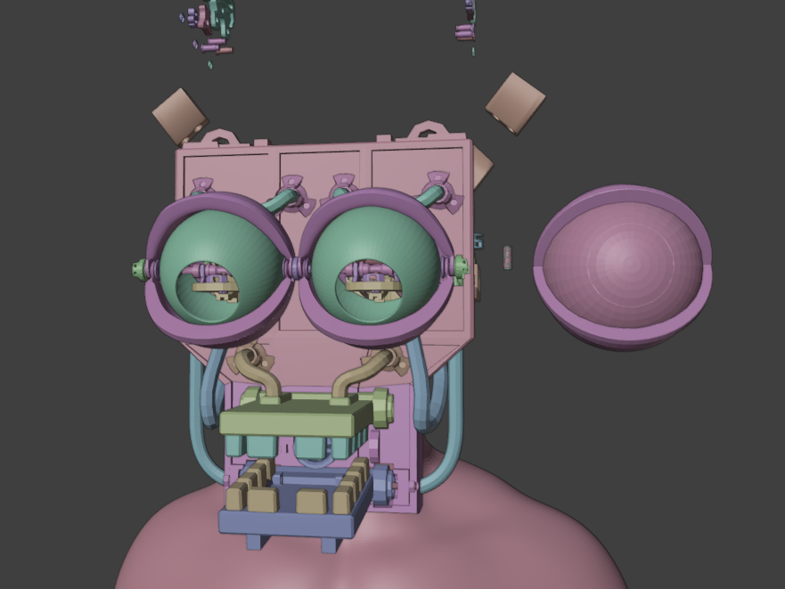
The video shows the prototype in action, demonstrating how the mechanism moves while allowing me to look through the eyes of the mask.
05 / FUTURE PLANS
WHAT'S NEXT?
Although the third prototype achieves the main goals of this project, I still have ideas for future improvements. My next objective is to develop a fourth prototype featuring functional eyelids, adding another level of realism and expression to the animatronic. I also want to create an external shell that can be placed over the robotic structure. This would make it possible to change the character's appearance while keeping the same internal mechanism. One of the ideas I'm considering is using a Foxy shell, allowing the robot to become a different character without having to rebuild the entire mechanism.
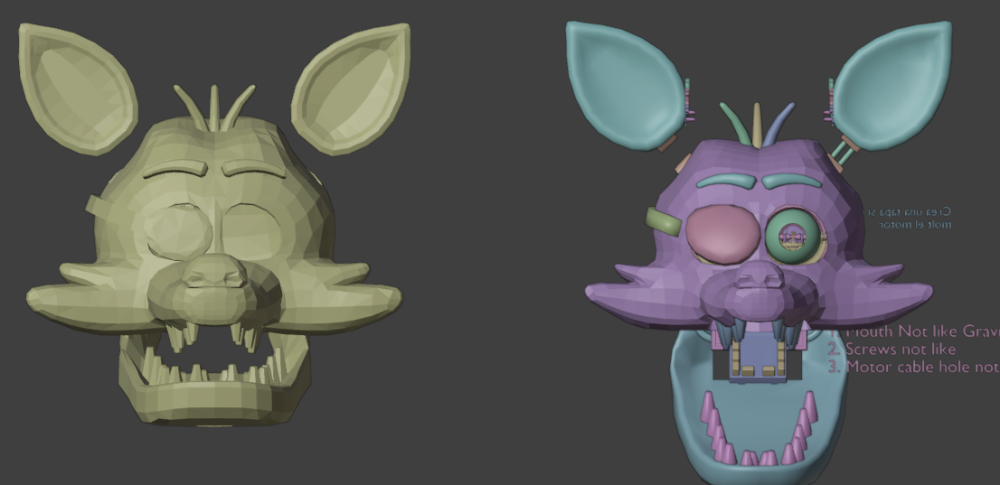
These are still future plans, but they represent the direction I would like to take this project next.